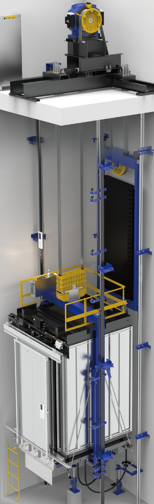
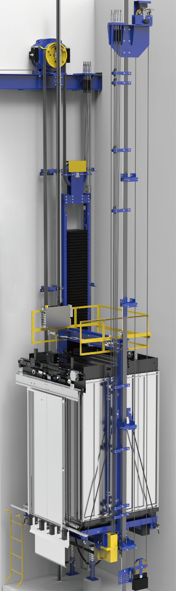

Пассажирские лифты

Пассажирский лифт VF320
с малым машинным помещением

Пассажирский лифт VF320
без машинного помещения
Особенности серии VF
Пассажирские лифты Sanyo предназначены для перевозки людей и оборудованы автоматической системой управления движения. Выпускаются в вариантах исполнения с машинным помещением и без, грузоподъемностью от 320 до 1600 кг.
Скорость подъема варьируется от 1 до 8 м/с. Отделка пассажирских лифтов так же отличается разнообразием решений: от крашеной стали до индивидуальных дизайнерских решений.
320-1600 кг
Грузоподъемность
@@include('components/page-blocks/_calc.html')